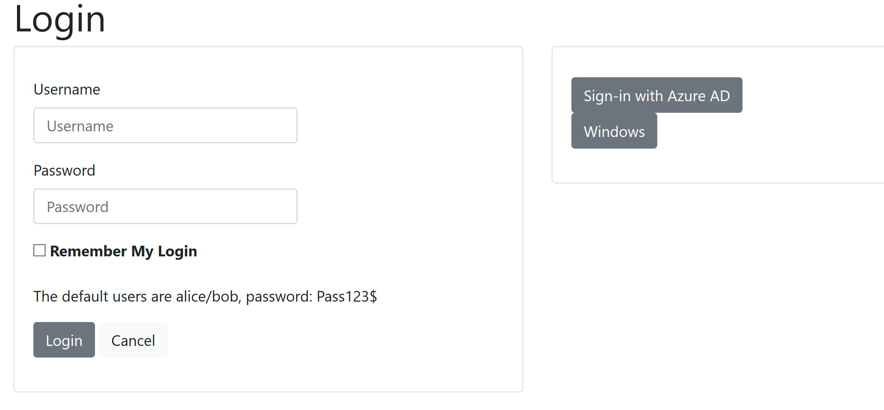

<h1>Documentation integrating Identity Server with BD, Windows AD and Azure AAD</h1>

<h2>Run the project</h2>

Download Sources.

Run the project AspNetCoreWindowsAuth.sln .

The following screen should show :
<br />



<br />
<h2>Code Integration with BD</h2>
See in Startup.cs the following


